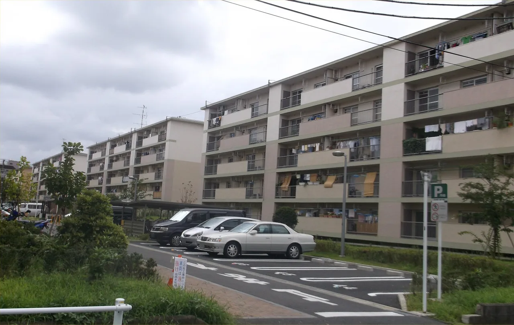

How to Rent an Apartment in Japan as a Foreigner (2026)
Renting your first place in Japan is less about whether you can afford the rent and more about surviving the pile of upfront fees, finding a guarantor when you have no relatives here, and getting past landlords who are nervous about foreign tenants. All three are real. All three are workable once you know the names of the things you are paying for and which routes skip the worst of the pile. We have rented in a few prefectures, and this is the version we wish someone had given us first.

One thing up front: this guide goes deep on renting specifically. The rest of relocating — visa, city-hall registration, bank account, the order to do it all in — lives in our practical relocation timeline, and we link back to it rather than repeating it here.
Quick answers
Q. How much are the upfront costs to rent in Japan?
A. Budget roughly four to six months of rent before you get the keys in Tokyo, and somewhat less in regional cities. That stack is deposit (敷金), key money (礼金), the agency fee (仲介手数料), a guarantor-company fee (保証会社), the first month's rent, fire insurance, and a lock change. Some of those are negotiable or zero on the right property.
Q. What if I have no guarantor in Japan?
A. You almost certainly will not need a personal one. A guarantor company (保証会社) is now standard and takes a one-time fee of roughly half to one month's rent. They run a basic check and stand in for the relative most foreigners do not have here.
Q. Can foreigners even rent an apartment in Japan?
A. Yes. Some private landlords still refuse foreign tenants, which is real and frustrating, but it is far from universal and it is improving. Foreigner-friendly agencies, public UR housing, and share houses sidestep most of it.
Q. What is the cheapest way to rent?
A. UR public housing charges no key money, no agency fee, and no guarantor. Share houses often skip the deposit and key money entirely, so move-in can be one to two months of rent. Both also accept foreign tenants as a matter of course.
The upfront cost stack
The rent on the listing is not what you pay to move in. A standard private rental in Japan asks for a stack of one-time charges before you get the keys, and in Tokyo that stack lands at roughly four to six months of rent. Regional cities tend to run lower, partly because key money is less common outside the big metros. Here is what each line is, using the Japanese names you will see on the estimate sheet (見積もり, mitsumori).
So on a ¥80,000 Tokyo apartment, plan to have something like ¥320,000 to ¥480,000 ready before move-in. The deposit comes back at the end minus a cleaning charge, so it is not all gone for good, but you do need the cash on hand at the start. Key money and the agency fee are the lines most worth shopping on: plenty of listings now advertise 礼金ゼロ (zero key money), and some agencies discount the commission to win the deal.
DON'T LET THE DEPOSIT SURPRISE YOU AT THE END
The shikikin is refundable, but landlords routinely deduct a cleaning fee (ハウスクリーニング) and any repairs from it. Restoration rules tend to be more tenant-friendly than people expect under the housing ministry's restoration guidelines, so do not assume a deduction is final. Photograph the apartment's condition on the day you move in and keep the move-in checklist.
Guarantor companies replaced personal guarantors
The old fear was the personal guarantor (連帯保証人, rentai hoshōnin): you needed a Japanese relative with stable income to co-sign your lease, and if you did not have one, you were stuck. For most rentals that requirement is gone. The market shifted to guarantor companies (家賃保証会社), which charge a one-time fee of about half to one month's rent plus a small annual renewal, run a light background and income check, and cover the landlord if you fall behind. Many landlords now require a guarantor company even from Japanese tenants who do have relatives.
For a foreigner this is good news, because it turns "do you know a Japanese person willing to take legal responsibility for you" into "can you pass a basic check and pay a fee." Some guarantor companies are more comfortable with foreign applicants than others, and a foreigner-friendly agency will steer you to ones that approve quickly. The Real Estate Japan English listings flag guarantor terms on each property, which is worth reading before you apply. Real Estate Japan — English listings
The discrimination question, honestly
You will read that landlords in Japan reject foreigners, and that is true some of the time. Japanese government surveys of foreign residents have found that a notable share were refused a rental for not being Japanese (the exact share varies by survey), and the usual stated reasons are language worries and assumptions about garbage rules or noise. It is the part of renting here that stings the most, because it is not about your income or your paperwork.
The honest framing is that it is real, it is a minority of landlords, and it is getting better. The way around it is not to argue with a reluctant landlord but to start with people who already say yes: agencies that market to foreign tenants, the public UR housing system, and share houses. When an agency specialises in foreign clients, the listings they show you are already pre-filtered to landlords who accept foreign tenants, so you skip the rejections entirely.
Asking this on the first call saves everyone time. A good agency will answer plainly and only show you properties where the answer is yes.
Cheaper, lower-friction routes
If the four-to-six-months stack or the rejection risk is the blocker, three routes cut both at once.
UR public housing. The Urban Renaissance Agency is a public body that rents apartments with no key money, no agency fee, no guarantor, and no renewal fee. You still pay a deposit and first rent, but you skip the lines that usually make the upfront pile so steep, and UR accepts foreign residents on the same terms as everyone else. The catch is that you generally need to show income of, depending on the rent band, roughly 33–40 times the monthly rent, or a savings-balance alternative, and the best-located buildings have waitlists. Listings and the application conditions are on UR's own site. UR Urban Renaissance Agency — rentals
Share houses. A share house (シェアハウス) rents you a private room with shared kitchen and bath, and the model usually drops the deposit and key money to zero or near it. Move-in often comes to one to two months of rent total, the contracts are foreigner-friendly by design, and utilities and furniture are frequently bundled. It is the fastest soft landing if you have just arrived and do not yet have a Japanese bank account or phone number. Sakura House is one long-running operator aimed squarely at foreign residents.
Some links above are affiliate links. We may earn a commission at no extra cost to you. We only list services we'd use ourselves. A short hotel or guesthouse stay is a sensible bridge while you view apartments and gather documents.
Guarantor-free and furnished / monthly options. Some private listings are marked 保証人不要 (no guarantor needed) or use only a guarantor company, and furnished monthly apartments (マンスリーマンション) let you sign for a few months with almost no upfront stack at all. They cost more per month than a standard lease, so they work best as a bridge: live in one while you take your time finding a normal apartment without the pressure of a hotel bill.
RUN THE MATH ON MONTHLY VS. STANDARD
A furnished monthly place has a higher monthly rate but almost no move-in pile. A standard lease has a lower monthly rate but four to six months upfront. If you will stay over a year, the standard lease is usually cheaper overall; for a few months or while you find your feet, the monthly option often wins. Add up both over your real expected stay before deciding.
The documents you need
Whichever route you take, the application (入居申込, nyūkyo mōshikomi) and the guarantor check ask for the same core set. Having these ready is what turns a multi-week scramble into a smooth signing.
Residence card (在留カード). Your status of residence and its validity are the first thing checked. Short-term visitors generally cannot sign a standard lease, which is one more reason share houses and monthly apartments fill the early gap.
A Japanese phone number. The agency, the guarantor company, and the landlord all want a contactable number, and forms reject overseas numbers. This is part of the early chicken-and-egg problem of moving here, which we walk through in getting a bank account and SIM card.
A Japanese bank account. Rent is collected by automatic transfer (口座振替), and the guarantor company usually wants account details. A Japan Post Bank (ゆうちょ) account is the most foreigner-accessible starting point.
Proof of income. A contract, an offer letter, a payslip, or tax documents — enough to show you can cover the rent, typically against a guide of monthly rent under about a third of your monthly income. Students and new arrivals can often substitute a sponsor or a savings balance.
If you want the whole arrival sequence in order, including when to do the rental search relative to city-hall registration and the bank, our interactive relocation timeline tool lays it out step by step.
Where this fits in your move
Renting is one chapter of a longer move, and doing it in the wrong order costs you. You usually want a phone number and at least a temporary address before you can lock in a lease and a bank account, which is exactly the knot the first two weeks present. Read this guide for the renting detail, then zoom out to the full sequence in our moving to Japan timeline, and sort the practical accounts in bank account and SIM card setup. With those three together you can budget the upfront stack, pick the route that fits your situation, and stop worrying about being turned away.
We built a free 8-question matcher: not the best place in Japan, the place that fits you. It compares 60 municipalities on real data about climate, housing and car-free life, and tells you what it could not verify. No name, no email.
Try Japan Living Fit →UR Urban Renaissance Agency — public rentals with no key money, agency fee, or guarantor
Real Estate Japan — English-language rental listings with guarantor and fee terms